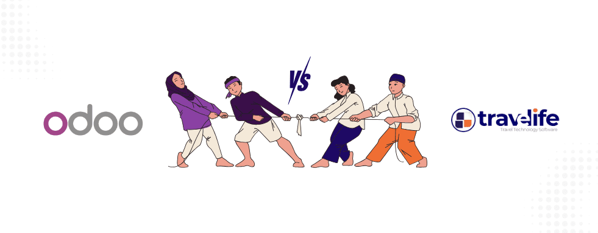

En breve: Odoo es un ERP generalista; para una agencia de viajes hay que desarrollarlo en profundidad para gestionar los allotments, las API del sector (Amadeus, Hotelbeds, channel managers) y el IVA sobre el margen del artículo 125 en Marruecos, lo cual es costoso y arriesgado. Travelife Manage se desarrolló desde cero para estas necesidades y las integra de forma nativa, con una solución llave en mano mantenida por expertos en turismo.
El sector turístico es un universo complejo, con necesidades específicas que las soluciones ERP generalistas no siempre pueden cubrir. Hoy en día, muchas agencias se plantean Odoo u otras plataformas de código abierto para gestionar su actividad. Sin embargo, este enfoque puede mostrar rápidamente sus límites. Veamos por qué.
1. El sector de los viajes es un oficio en sí mismo
A diferencia de sectores más convencionales, las agencias de viajes deben gestionar:
- productos variados (vuelos, hoteles, circuitos, actividades, paquetes, traslados);
- restricciones específicas (gestión de allotments, reservas en tiempo real, cupos, tarificación compleja);
- normas contables locales muy precisas (como el artículo 125 en Marruecos sobre el IVA sobre el margen);
- relaciones complejas entre proveedores y clientes, con una trazabilidad estricta.
Odoo, aunque es potente, está concebido como un ERP genérico. Su núcleo no contempla todas estas particularidades del sector. Por tanto, hay que desarrollar y adaptar la plataforma en profundidad, lo cual es costoso y arriesgado.
2. Los retos de integrar las API del sector en Odoo para agencias de viajes
La integración de API como Amadeus (emisión de billetes), Hotelbeds (hoteles) y los channel managers no es una simple cuestión técnica. Estas API exigen una gestión precisa, una sincronización rápida, una gran robustez y reglas de negocio muy concretas.
Desarrollar estas integraciones en un ERP no especializado requiere recursos considerables, supone costes elevados y expone a un alto riesgo de fallos. En Travelife Manage hemos desarrollado estas integraciones de forma nativa y con una fuerte orientación al sector, lo que garantiza estabilidad, rapidez y precisión.
3. La contabilidad específica del turismo
La fiscalidad marroquí, en particular la aplicación del artículo 125 (IVA sobre el margen), es una particularidad que hay que dominar sin falta. Odoo no incorpora esta lógica por defecto: hay que desarrollarla como capa adicional, lo que complica el mantenimiento y las actualizaciones.
Travelife Manage integra estas reglas de forma nativa, lo que permite a las agencias cumplir la normativa sin esfuerzo adicional. Para saber más, consulte nuestra página dedicada al software de IVA sobre el margen para agencias de viajes.

4. Experiencia de usuario y flujos de trabajo adaptados
Los flujos de trabajo de una agencia de viajes son muy específicos: gestión de expedientes de clientes, aprobaciones, seguimiento de pagos, emisión de vouchers, gestión de créditos e impagados. Las soluciones de código abierto suelen requerir una adaptación considerable de las interfaces para acercarse a ellos.
Travelife Manage está pensado desde el principio para responder a los usos propios de las agencias, lo que agiliza el trabajo diario y aumenta la productividad.
5. Soporte, mantenimiento y evolución
Un ERP de código abierto muy modificado puede resultar difícil de mantener y de hacer evolucionar, y volverle dependiente de un equipo de desarrolladores a menudo alejado de su sector.
Travelife Manage es una solución llave en mano, mantenida y mejorada por un equipo de expertos en turismo que conoce perfectamente sus necesidades.
6. La historia de Travelife: por qué era indispensable desarrollar desde cero
Antes de lanzar Travelife Manage, intentamos adaptar a una agencia de viajes soluciones de código abierto como Odoo, e incluso un sistema de información más potente como SAP Business One. Pronto comprobamos que estas plataformas, pese a su flexibilidad, no respondían por completo a las exigencias tan específicas del sector.
La industria de los viajes, con su compleja gestión de allotments, la integración de múltiples API, sus normas fiscales locales y la diversidad de sus productos, necesita un sistema concebido desde el principio para estas restricciones.
Por eso tomamos la decisión estratégica de empezar de cero y desarrollar Travelife Manage desde cero. Este enfoque nos permitió:
- dominar a la perfección cada mecanismo del negocio, sin concesiones;
- integrar de forma nativa todas las API indispensables, con robustez y rapidez;
- adaptar con precisión la solución a las normas contables marroquíes, en particular el artículo 125 sobre el IVA sobre el margen;
- ofrecer una experiencia de usuario fluida y un flujo de trabajo 100 % dedicado a las agencias, que cubre incoming, outgoing, corporate, B2B y B2C.
Esta decisión nos permite hoy ofrecer un producto estable, escalable y perfectamente alineado con las necesidades reales de las agencias de viajes.
Travelife Manage u Odoo: ¿cuál elegir?
Elegir Travelife Manage es optar por una solución sectorial dedicada, fiable, conforme y escalable, pensada para acompañar a todas las agencias de viajes en sus particularidades. En cambio, elegir Odoo o un ERP de código abierto genérico suele significar aceptar importantes costes de adaptación, riesgos funcionales y una mayor complejidad.
No se deje frenar por soluciones «listas para usar» que en realidad no lo están para el turismo. Opte por Travelife Manage, la solución pensada para su negocio. Para entender las trampas de un proyecto mal planteado, lea también nuestro artículo sobre el fracaso en la implantación de un ERP en una agencia de viajes.
¿Aún no es cliente de Travelife?
Gracias a nuestra solución de software, disfrute de una interfaz ergonómica, de la integración de los principales GDS, de la gestión de la facturación, de la generación de informes, de un CRM integrado, de un sistema de reservas B2C, de una plataforma B2B y de un sistema de gestión comercial.
Descúbralo en una demostración.
Preguntas frecuentes
¿Es Odoo adecuado para una agencia de viajes?
Odoo es un ERP genérico potente, pero su núcleo no gestiona de forma nativa las particularidades de los viajes: allotments, cupos, reservas en tiempo real, tarificación compleja, integración de GDS e IVA sobre el margen. Para utilizarlo en una agencia hay que desarrollarlo y adaptarlo en profundidad, lo que genera costes importantes, riesgos de fallos y un mantenimiento más complejo en las actualizaciones.
¿Gestiona Odoo el IVA sobre el margen del artículo 125 en Marruecos?
No, no por defecto. La lógica del IVA sobre el margen prevista en el artículo 125 debe desarrollarse como capa adicional en Odoo, lo que complica el mantenimiento y las actualizaciones. Travelife Manage integra de forma nativa estas normas contables marroquíes, lo que permite a las agencias de viajes cumplir la normativa sin desarrollos específicos ni esfuerzo adicional.
¿Por qué se desarrolló Travelife desde cero?
El equipo de Travelife intentó primero adaptar Odoo y después SAP Business One en una agencia de viajes, sin lograr cubrir todas las exigencias del sector. Por eso decidió empezar de cero para dominar cada mecanismo del negocio, integrar de forma nativa las API indispensables, respetar la fiscalidad marroquí y ofrecer un flujo de trabajo dedicado a incoming, outgoing, corporate, B2B y B2C.